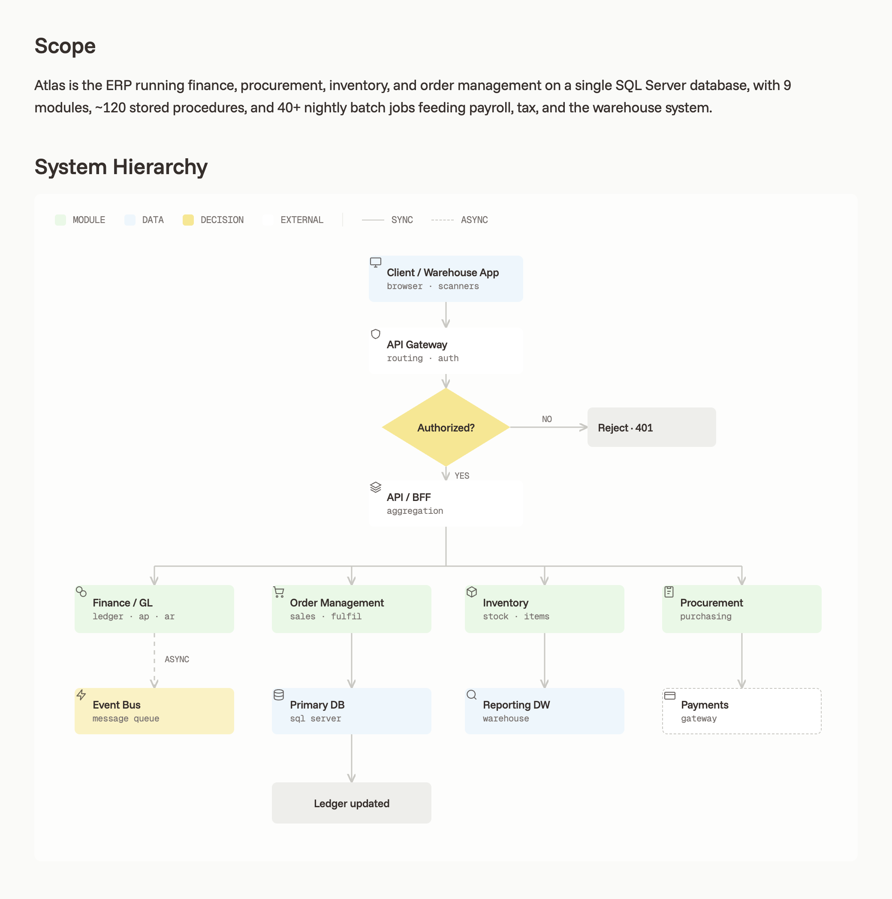

1
Discover
Map decades of legacy in weeks.
Gallop reads across your estate - source repositories, databases, and infrastructure spanning millions of lines and dozens of interconnected systems - and builds verified documentation and end-to-end capability maps. You get a complete, auditable picture of your business logic before any rebuild begins.